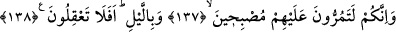

ettik.” Allah Teâlâ onların altını üstüne getirmekle yetinmemiş ardından üzerlerine taş
yağdırmıştır. Yani, onun kavminden diğerlerini helâk eyledik. Onların memleketlerinin
altını üstüne getirdik, demektir. Elbet bunda Lût (a.s.)’ın işinin ve şanının yüceliğine ve
elçiler cümlesinden olduğuna bir çok şahitler vardır. Lût (a.s.)’ın kıssası Hud ve Hicr
surelerinde geçmiştir. Buralara bakılabilir.
137, 138. (Ey insanlar!) Elbette siz de sabah ve akşam onlara uğruyorsunuz. Hâla
akıllanmayacak mısınız?
Ey Mekke halkı “Elbette siz” Şam ticaret yolunda “sabah ve akşam onlara” yani
helak edilen Lût kavminin diyar ve menzillerine “uğruyorsunuz” ve onların helak
eserlerini müşâhede ediyorsunuz. Zira Sodom Şam yolundadır. Allah Teâlâ şöyle
buyuruyor. “Onlar hâla gözler önünde duran bir yol üzerindedirler.” (Hicr 15/76)
Bunu müşâhede ettiğiniz halde “Hâla akıllanmayacak mısınız?” ki bu durumdan ibret
alasınız. Onların başına gelen musibetin sizin de başınıza gelmesinden endişe edesiniz.
Zira inkar ve tekzipleri sebebiyle Sodom halkını helak edip köklerini kurutmaya kâdir
olan, Mekke halkının da köklerini kurutmaya kâdirdir. Çünkü helak sebepleri aynıdır.
Kaldı ki Mekke halkı onlardan daha inkarcı ve daha yalanlayıcıdır. Allah Teâlâ şöyle
buyuruyor. “Şimdi sizin kâfirleriniz, onlardan daha mı iyidirler?” (el-Kamer 54/43)
Hz. Peygamber (s.a.) Ebû Cehil için “Bu kâfir Allah’a karşı firavundan daha
azgındır”[217] buyurmuştur. Akıllı insan olup bitenden ibret almalı, Hak Teâlâ’nın
vahdaniyetine inanmalı, Allah Teâlâ’nın fazl’u kerem ve rahmet kapılarına dönmelidir.
Acûz yani yaşlı kocakarı durumunda olan nefs-i emmaresini terbiye etmelidir. Kahır ve
celâl ehliyle beraber helak olmaması için nefsini teslim olmaya ve emre imtisal etmeye
teşvik etmelidir. Bazı büyükler der ki: Ehlullahın yoluna giren, herkese yardım
etmelidir. Sonra bu yardım hasıl olunca ya bunu ibadet ve gayretle birinci hale dönüş
takip eder ki bunlar inâyet-i ilahiyye ehlidir. Yahut böyle bir dönüş olmaz. Bu durumda
olan kimse ise asla ve ebediyyen iflah olmaz. Yani bu kimse başta ve sonda günaha ısrar
eden gibi olur. Sonra elbette Allah Teâlâ vucûd-ı insanîde aklı terkip etmiştir.
Başlangıçta nefse zahmet ve meşakkat olsa da insan iyi sonuca dair uygun ve üstün olanı
görür ve seçer. Nefis ve heva ise bunun tam aksinedir. Nefis ve heva işin akıbetine
bakmadan sonuçta zararlı da olsa, o vakitte kendinden zarar ve eziyeti bertaraf etmeyi
tercih eder. Tıpkı gözünden rahatsız olup da tatlı yemeyi, güneşte oynamayı helîle
bitkisinden yemeye ve hacamat olmaya tercih eden çocuk gibi. Bundan dolayı Hz.
Peygamber (s.a.) “Cennet nefsin hoşuna gitmeyen şeylerle; cehennem ise şehevî
şeylerle kuşatılmıştır.”[218] buyurmaktadır.